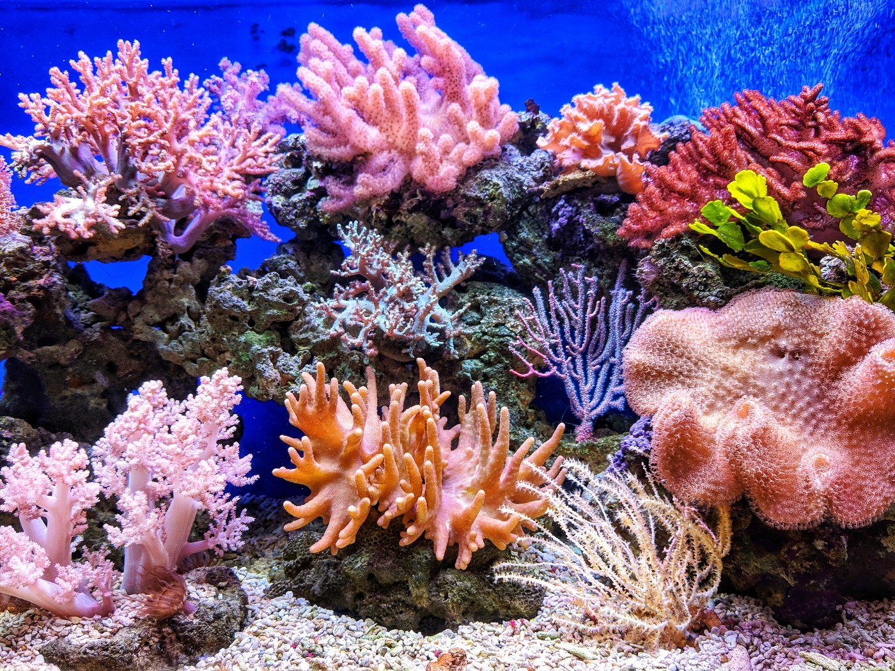

Full Stack Sinatra
Intro
For this CRUD application I chose to create a website where users can upload and modify additions to their coral collection.
Backend
The database facing portion of the application is administered using Active Record and PostgreSQL as the database. I decided to use Postgres rather than SQLite3 because Postgres.app for Mac and Postbird make visualizing the data much easier than having to rely only on Tux.
My models consist of a User and a Post. Users can have many posts and Posts belong to Users.
I have 3 controllers: Application Controller, Post Controller, and User Controller. One of the more challenging aspects of this project was getting all three to work together. I have application controller setting the views for the others like this
set :views, Proc.new { File.join(root, “../views/”) }
so the other controllers can render erb files in directories named after them. Both inherit from Application Controller rather than Sinatra::Base.
User Controller and Post Controller control, no pun intended, access to their resources using a current_user helper method defined in Application controller. Here are examples from each:
User Controller:
@user = User.find(params[:id])
if logged_in? && @user === current_user
erb :’users/user_page’
else
redirect ‘/not_authorized’
end
Post Controller:
@post = Post.find(params[:id])
@user = current_user
if current_user.posts.include?(@post)
erb :’/posts/post_page’
else
redirect “/not_authorized”
end
These were probably the biggest challenges on the backend, as well as figuring out to use a hidden input field when making patch requests.
Frontend
In general, CSS, I feel, is overlooked in terms of difficulty. Many people don’t consider it “real” programming, but it can often take as much time as writing logic. And if you don’t use it, well, your site doesn’t look good.
Now that I’m off of my soapbox, another big frontend challenge was validating form input.
I was not previously aware of the powerful validation features HTML 5 comes with out of the box. But learned a lot building this website. (Active Record also includes some validation, such as the authenticate method and validates_uniqueness_of.)
Conclusion
This was a fun project to build and I’m happy with how it turned out.